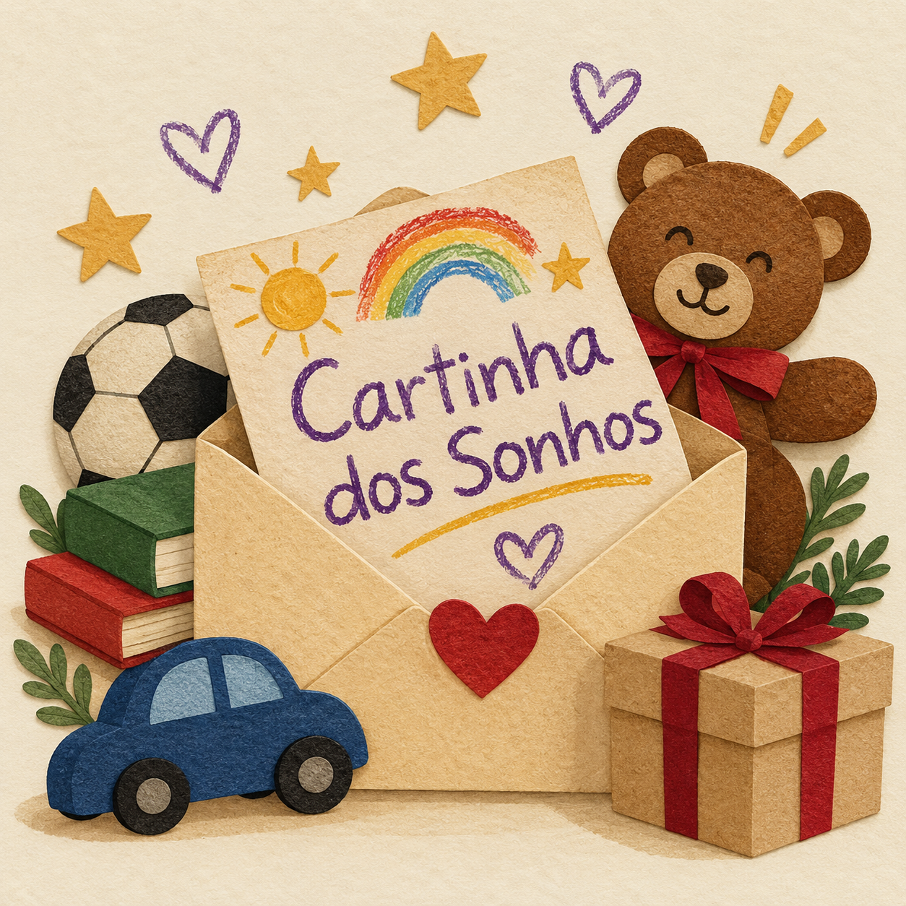

Nosso projeto mais querido
Cartinha dos Sonhos
Todo ano, as crianças escrevem ou desenham uma cartinha contando seus sonhos. Os pedidos vão de uma mochila nova a um livro de aventuras, uma bola ou um instrumento musical. Padrinhos, madrinhas e parceiros ajudam a transformar essas cartas em realidade.
Apadrinhe uma cartinha!
Você pode apadrinhar uma cartinha, doar presentes ou se tornar um parceiro do projeto. Entre em contato com a ONG para conhecer os sonhos das crianças e descobrir como ajudar a transformar cada pedido em realidade!